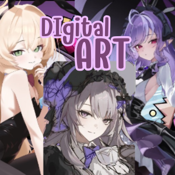

ในยุคดิจิทัลที่เทคโนโลยีเข้ามามีบทบาทสำคัญในทุกด้านของชีวิต Digital Art หรือศิลปะดิจิทัลกลายเป็นสื่อสร้างสรรค์ที่ได้รับความนิยมเพิ่มมากขึ้นเรื่อย ๆศิลปินไม่จำเป็นต้องใช้วัสดุแบบดั้งเดิมอีกต่อไป แต่สามารถใช้เครื่องมือและซอฟต์แวร์ดิจิทัลสร้างผลงานศิลปะได้อย่างหลากหลายและยืดหยุ่น ไม่ว่าจะเป็นภาพวาดดิจิทัล กราฟิกเวกเตอร์ ภาพสามมิติ หรือแม้แต่ผลงานที่สร้างด้วยปัญญาประดิษฐ์
Digital Art ไม่เพียงแต่เป็นเครื่องมือในการแสดงออกทางความคิดสร้างสรรค์เท่านั้น แต่ยังเป็นส่วนสำคัญในอุตสาหกรรมบันเทิง การตลาด และตลาดศิลปะยุคใหม่ ที่เปิดโอกาสให้ศิลปินสามารถสร้างรายได้และเผยแพร่ผลงานสู่สายตาคนทั่วโลกได้ง่ายขึ้น
บทความนี้จะพาคุณไปทำความรู้จักกับ Digital Art ในหลากหลายแง่มุม ตั้งแต่ความหมาย ประเภทของงาน ไปจนถึงเครื่องมือและความสำคัญในปัจจุบัน
